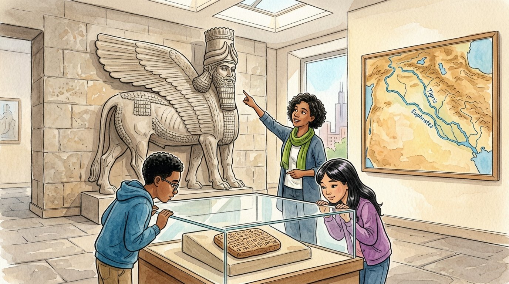

Grade 6 · Social studies · SS.6-8.G.4 · SS.6-8.G.7
The river that gave and took
A story about Mesopotamia, the land between two rivers, and how people changed it.
El río que daba y quitaba. Un cuento sobre Mesopotamia, la tierra entre dos ríos, y cómo la gente la transformó.
Key words you will learn
Tap a green word to see what it means.
Toca una palabra verde para ver qué significa. Con la ayuda activada, verás también la definición en español.
The story
El cuento está en inglés. Pulsa «Listen to the story» para escucharlo y toca las palabras verdes cuando no entiendas una.
At the museum of ancient cultures, a stone bull with wings and a bearded human face stood taller than two basketball players. "He guarded a palace in Mesopotamia about 2,700 years ago," said Ms. Haddad. Israel stared up. "What does Mesopotamia mean?" "The land between the rivers."
She pointed at a map on the wall. Two blue rivers, the Tigris and the Euphrates, crossed a land that was mostly dry and brown. "Hardly any rain fell there in summer," said Ms. Haddad, "so people chose to close to the rivers. Water decided where the first towns grew."
"But the rivers were tricky," she went on. "Every spring, snow melted in the mountains, and the rivers flooded. Sometimes a flood washed away a whole village." "And yet farmers were happy after floods?" asked Sophia, reading a sign. "Yes, because the water left behind a layer of , soft, rich soil that was perfect for growing barley."
The farmers didn't just wait for the river. They dug long canals and ditches to carry water to their fields. This let them grow crops even in the hottest, driest months. "They changed their to survive in it," said Ms. Haddad.
With more water, farmers grew more barley than their families could eat. "That extra food was a ," said Ms. Haddad. "And when not everybody had to farm, some people could become potters, weavers, builders and priests." Towns grew into cities like Uruk, with tens of thousands of people.
Sophia looked at a clay tablet the size of a cookie. Tiny wedge-shaped marks covered it. "Is that writing?" "It's cuneiform, one of the first kinds of writing in the world," said Ms. Haddad. "Many early tablets are lists of barley, sheep and beer, because people needed to keep track of all that surplus." With cities, rulers, laws and writing, Mesopotamia became a .
"So the rivers only gave good things?" asked Israel. Ms. Haddad shook her head. "Over hundreds of years, irrigation water left salt behind in the soil. In some places, the land became too salty to grow wheat, so farmers switched to barley, which can handle more salt." "The river gave," said Sophia, "and the people's changes took some of it back."
On the bus back, Israel looked out at the Chicago River. "Did people settle here because of water too?" "Exactly," said Ms. Haddad. "And we changed our river too. Chicago once reversed its flow." Israel's eyes went wide. "Mesopotamia was cool, but that is wild."
Pause to connect
Visual arts · VA:Cn11.1.6
Look at the Standard of Ur, a wooden box decorated more than 4,500 years ago in the city of Ur, in Mesopotamia. Look at each row, one at a time.
Observa el Estandarte de Ur, una caja de madera decorada hace más de 4,500 años en la ciudad de Ur, en Mesopotamia. Mira cada fila, una por una.
See the Standard of Ur (British Museum on Google Arts & Culture) (opens in a new tab)
What you will see: The box is covered with tiny pieces of white shell, red stone and blue lapis lazuli. One side shows war, with soldiers and chariots. The other side shows peace: rows of people bringing animals, fish and heavy bundles, and at the top, a feast with a musician playing a lyre.
Lo que verás: La caja está cubierta de trocitos de concha blanca, piedra roja y lapislázuli azul. Un lado muestra la guerra, con soldados y carros. El otro lado muestra la paz: filas de personas que traen animales, peces y bultos pesados, y arriba, un banquete con un músico que toca una lira.
- On the peace side, what are people carrying? What does that tell you about the surplus in Ur?En el lado de la paz, ¿qué llevan las personas? ¿Qué te dice eso sobre el excedente de Ur?
- The blue lapis lazuli came from mountains far away, in what is now Afghanistan. What does that tell you about the people of Ur?El lapislázuli azul venía de montañas lejanas, en lo que hoy es Afganistán. ¿Qué te dice eso sobre la gente de Ur?
Think about it, then answer in your notebook or talk it over with someone at home.
Check your thinking
People are carrying animals, fish and goods to the feast, which shows that Ur had more food and goods than people needed right away: a surplus. Because the blue stone came from far away, the people of Ur must have traded with distant places. The artist also put the most important people at the top and made them bigger, so we can see who had power.
Glossary
- settle
- To move to a place and make a home there for a long time.
- asentarse: Ir a un lugar y hacer allí un hogar por mucho tiempo.
- silt
- Fine, rich soil that a river leaves behind after a flood.
- limo: Tierra fina y fértil que deja un río después de una inundación.
- irrigation
- Bringing water to crops through canals, ditches or pipes.
- irrigación (riego): Llevar agua a los cultivos por canales, zanjas o tubos.
- surplus
- More of something than people need right away, like extra grain.
- excedente: Más de algo de lo que la gente necesita en el momento, como grano de sobra.
- civilization
- A large group of people with cities, a government, writing and different kinds of jobs.
- civilización: Un gran grupo de personas con ciudades, gobierno, escritura y distintos tipos de trabajos.
- environment
- The land, water, air, plants and animals around people.
- medio ambiente: La tierra, el agua, el aire, las plantas y los animales que rodean a las personas.
Questions
Choose the correct answer. If you make a mistake, the story shows you where the answer is.
Elige la respuesta correcta. Si te equivocas, el cuento te muestra dónde está la respuesta.
-
Question A. Why did people in Mesopotamia settle close to the rivers?
¿Por qué la gente de Mesopotamia se asentó cerca de los ríos?
Hardly any rain fell in summer, so people settled close to the rivers, where there was water.
-
Question B. Why were farmers happy after a flood?
¿Por qué los campesinos se alegraban después de una inundación?
The flood left behind a layer of silt, soft and rich soil that was perfect for growing barley.
-
Question C. How did irrigation help the farmers?
¿Cómo ayudó el riego a los campesinos?
Canals and ditches carried water to the fields, so farmers could grow crops even in the hottest, driest months.
-
Question D. What happened when farmers grew a surplus?
¿Qué pasó cuando los campesinos produjeron un excedente?
When not everybody had to farm, some people could become potters, weavers, builders and priests.
-
Question E. What problem did irrigation cause over time?
¿Qué problema causó el riego con el tiempo?
Over hundreds of years, irrigation water left salt in the soil, and some land became too salty to grow wheat.
Challenge: explain your thinking
Cause and effect
Make a chain of causes and effects that starts with "Very little rain fell" and ends with "Cities grew." Use at least four links from the story.
Causa y efecto. Haz una cadena de causas y efectos que empiece con «Casi no llovía» y termine con «Las ciudades crecieron». Usa por lo menos cuatro eslabones del cuento.
Answer in your notebook or talk it over with a classmate. Use evidence from the story.
Responde en tu cuaderno o coméntalo con un compañero. Usa evidencia del cuento.
Check your thinking
Very little rain fell → people settled near the rivers → they dug canals for irrigation → farmers grew a surplus of barley → some people could do other jobs → cities grew. Your chain can have different words, but each link should cause the next one.
Go further
People in Mesopotamia and in Chicago both changed their rivers. Compare one change from each place: why did people make it, and what was one effect, good or bad?
Para ir más lejos. La gente de Mesopotamia y de Chicago transformó sus ríos. Compara un cambio de cada lugar: ¿por qué lo hicieron y cuál fue un efecto, bueno o malo?
Check your thinking
Mesopotamia: farmers dug irrigation canals to grow crops in the dry season; a good effect was a surplus of food, and a bad effect was salt in the soil. Chicago: the city reversed its river around 1900 so sewage would flow away from Lake Michigan, where people got drinking water; that helped Chicago, but sent the dirty water toward towns downstream. Every change to the environment has more than one effect.